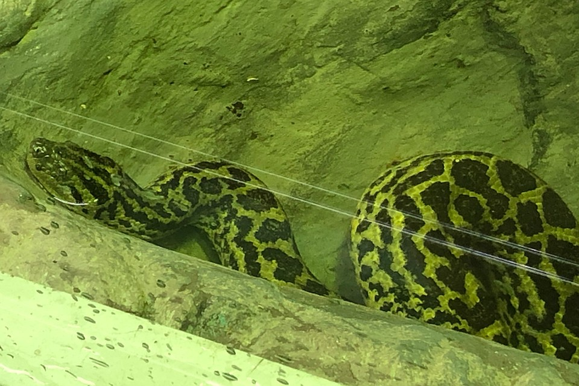

Самый мелкий вид среди анаконд. В длину парагвайская анаконда достигает 3 м, но встречаются особи и до 5м. Самки обычно несколько крупнее самцов (длина самок до 3,5 м, вес до 45 кг, самцов – до 2,5 м). Обычно взрослые змеи весят от 25 до 35 кг. Окраска спины темно коричневая или оливковая, бока и брюхо – желтые. На теле расположены черные пятна и крапины. На продолговатой голове выделяются 5 темных полос, средняя из которых переходит на спину. Глаза и ноздри на голове приподняты. На хвосте имеются поперечные полосы.
